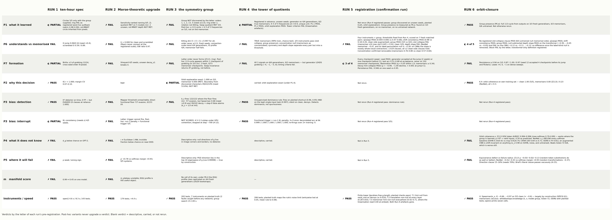
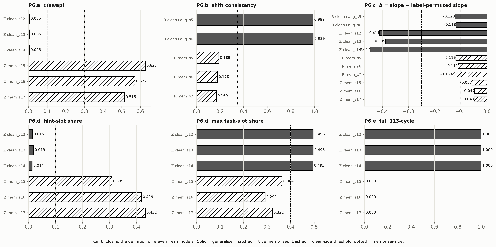
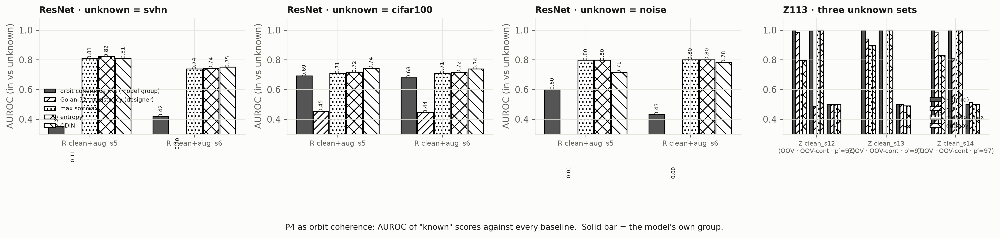
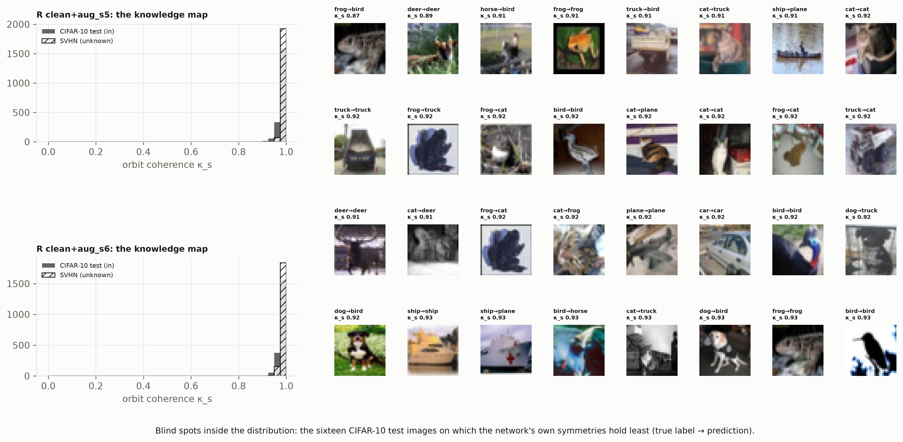
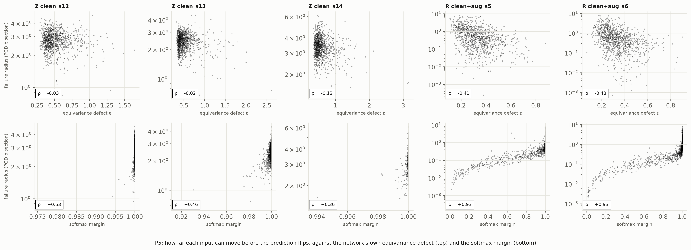
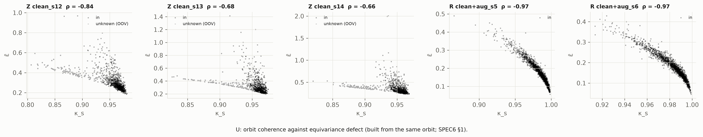

Five runs established that a network that generalises carries a discoverable group and one that memorises does not. Run 6 asked the group to do two more jobs: mark the boundary of what the network knows (orbit coherence, P4) and predict where it will fail (equivariance defect, P5) — against max-softmax, entropy, ODIN and Golan's designer transformations, on models trained after the thresholds were written. It also closed the definition of understanding with the memoriser clause in the right shape.
The definition closes on the transformer. Four instruments and the group hold on six fresh models; the re-registered slot-collapse clause passes 6/6 with the untrained null on the memoriser side. On the CNN the depth-slope instrument dies for good: null-subtracted, a memoriser's fibres tighten with depth exactly as much as a generaliser's (−0.12 vs −0.11 to −0.13). Three instruments there, not four.
Orbit coherence finds an unknown input only where the group was learned. On Z113 an out-of-vocabulary token breaks the learned orbit at AUROC 0.99 against softmax's 0.79–0.89. On the CNN, whose group is the architecture's own shifts and flips, coherence holds on SVHN, CIFAR-100, noise and the untrained network alike — it is below chance on SVHN and loses to every softmax baseline. The equivariance defect does not predict failure on either system; random non-group transformations do as well. P4 and P5 stay descriptive, and the theory is stated for five problems.

| Run-6 cell | Pre-registered | Measured | Verdict |
|---|---|---|---|
| P6.a / b / e | Run-5 thresholds | 0.005 ×3 vs 0.52–0.63 · 0.989 ×2 vs 0.17–0.19 · 3/3 vs 0/3 | PASS ×3 |
| P6.c null-subtracted slope | clean Δ < −0.25; mem > −0.10 | Z113 −0.41/−0.39/−0.45 vs −0.05 ×3 · ResNet −0.12/−0.12 vs −0.12/−0.11/−0.13 | FAIL (transformer-only PASS) |
| P6.d slot collapse, re-registered | mem: hint > 0.10 or max(a,b) < 0.40 | 3/3 clean, 3/3 mem (hint 0.31, 0.42, 0.43); untrained memoriser-side 6/6 | PASS |
| P6 block | all five | 4 of 5 | FAIL |
| P7.d persistence ≥ 0.94 | 3/3 | 0.871 / 1.000 / 0.970 | FAIL |
| K.2 Z113 unknown | AUROC(κ) ≥ 0.95 on OOV and p′=97 | OOV 0.994/0.996/0.996 (softmax 0.79–0.89); p′=97 0.500 ×3 (valid inputs, predicted) | FAIL by the letter; OOV passes |
| K.3 ResNet unknown | κ_s beats msp, entropy, ODIN; ≥ Golan-72 | SVHN κ_s 0.35/0.42 vs msp 0.81/0.74 · CIFAR-100 0.69/0.68 vs 0.71 · ODIN 0.74–0.81 · Golan 0.11–0.45 | FAIL |
| K.4 memoriser control | mem κ < 0.3; clean > 0.95 | 0.00 ×3, 0.23 ×3; 1.00 ×5 | PASS |
| F.2 (A-15) | |ρ(ε, radius)| > |ρ(margin)| | Z113 −0.03/−0.02/−0.13 vs +0.53/+0.46/+0.36 · ResNet −0.41/−0.43 vs +0.93/+0.94 | FAIL 0/5 |
| F.2 direction · F.3 non-group null | cos > 0.5 on ≥ 70% · group ε beats random ε | 15%, 16% · Z113 random −0.04/−0.14/−0.18 ≥ group; ResNet −0.37/−0.38 vs −0.41/−0.43 | FAIL · FAIL |
| U | Spearman(κ_s, ε̄) < −0.6, 5/5 | −0.84, −0.68, −0.66, −0.97, −0.97 (same orbit residuals: by construction) | PASS |

Across Runs 4–6, seventeen fresh matched models: slot collapse, preserved swap symmetry, and a recoverable generator separate every generaliser from every memoriser on the transformer, and null-subtracted fibre tightening does too (−0.39 to −0.45 vs −0.05). On the CNN, shift consistency separates (0.99 vs 0.17–0.19, augmentation on the clean side), and the depth slope does not once the label-blind null is removed. The generator on seed 12 arrives four checkpoints before the accuracy jump at test accuracy 0.23 and then flickers (present on 87% of later checkpoints); leads across six dense-swept seeds are +0, +0, +1, +4, +0, −1.

The one number that explains the CNN: mean κ_s is 0.983 on CIFAR-10 test, 0.989 on SVHN, 0.974 on CIFAR-100, 0.983 on Gaussian noise, and 0.996 on the untrained network. A shift-and-flip-invariant network is invariant on anything. That was written into SPEC5 and SPEC6 for the P6 nulls ("an untrained network has its architecture's symmetries") and not carried to K.3, where it is fatal. Z113 works because its group is learned: translation by the discovered generator with the answer relabelled, on which an out-of-vocabulary token has no place (κ drops from 1.00 to 0.33).


The brief's clause — ρ(ε, radius) "more negative than the softmax margin's" — is satisfied by any negative number, because the margin's correlation with the radius is positive (+0.36 to +0.93); A-15 registered the |ρ| reading before analysis. Under it ε fails on all five models. On Z113, random token substitutions predict failure as well as the group does (the group is not doing the work); on the CNN the group adds 0.05 to a smoothness proxy that random pixel transformations already give. The flipping direction is not the gradient of the defect (median cosine 0.22). Sixth run, third instrument for P5, same result: nothing beats the margin, because the radius is defined by descending it.

A network's knowledge is a group. That answers what it learned (P1: the generator, from outputs), why it decided (P2: κ = 1.000 on generalisers, 0.00–0.23 on memorisers), whether it understood (P6: registered on the transformer), how it formed (P7: with the jump, never on a memoriser), and, with the functional floor, where planted structure lives (P3). It does not answer what the network does not know unless the group was learned rather than built in, and it does not answer where the network will fail at all.
| What | Where (under ~/blindinglight) |
|---|---|
| Pre-registration, brief, amendments | SPEC6.md, docs/RUN6_BRIEF.md, AMENDMENTS.md (A-15) |
| Findings | FINDINGS6_P6.md, FINDINGS6_K.md, FINDINGS6_F.md, FINDINGS6_U.md, CLAIMS.md (Run-6 section), RUNLOG6.md |
| Results | results/run6/ (z113_finals, resnet, raw_* per model, sweep_* ×3 at 51 checkpoints, score.json) |
| Code | whiteboxtopo/knowledge.py (κ, ε, groups, Golan-72, non-group null), analysis/run6_{z113,resnet,score}.py, fig_run6.py, make_grid_run6.py, demo_run6.py; 213 tests pass, 1 xfail |
| Demo | logs/demo_run6_transcript.txt — the seven cells on one fresh generaliser and one fresh memoriser |